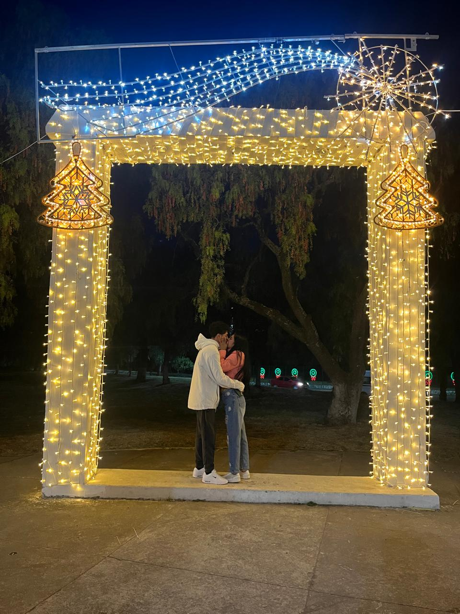
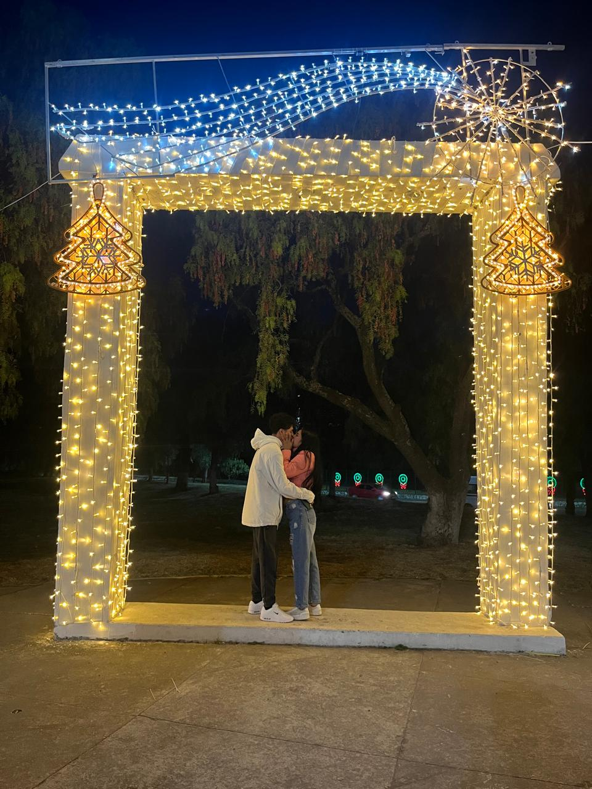
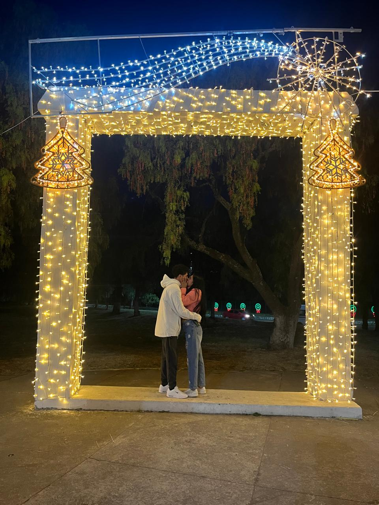

Esta página guarda los momentos más hermosos de mi vida, porque todos ellos existen gracias a ti. Cada recuerdo, cada instante y cada sonrisa forman parte de una historia que jamás quiero olvidar, porque eres tú quien le dio sentido a todo ❤️
Todo comenzó de una manera tan simple, casi como cualquier otro día, sin imaginar que ese momento cambiaría mi vida por completo. Al principio solo eras alguien más, pero poco a poco te convertiste en alguien especial, alguien que empezó a ocupar un lugar importante en mi corazón. Con cada conversación, cada sonrisa y cada momento compartido, algo dentro de mí fue creciendo sin darme cuenta. Me regalaste recuerdos que hoy son de los más valiosos que tengo, y desde ese día entendí que conocerte había sido una de las mejores cosas que me ha pasado en la vida.
Nuestra primera salida fue en un bazar navideño, un lugar lleno de luces, colores y un ambiente mágico, pero lo más especial no era el lugar, eras tú. Caminar contigo, escucharte, reír juntos y compartir ese momento hizo que todo se sintiera diferente. Entre todas esas luces, la que más brillaba eras tú. Ese día no solo fue una salida, fue el inicio de algo muy especial, el comienzo de recuerdos que hasta hoy siguen viviendo en mi corazón y que jamás voy a olvidar.
Fotos y Videos juntos 📸🎥

Cada foto y cada video guardado aquí representa un momento que significó mucho para mí, momentos que me hicieron feliz, que me hicieron sentir afortunado de tenerte en mi vida. Son recuerdos que demuestran lo hermoso que ha sido coincidir contigo, porque contigo incluso los momentos más simples se convierten en algo inolvidable.
Quiero que sepas que desde que llegaste a mi vida, todo cambió de una forma que nunca imaginé. Sin darme cuenta, te convertiste en mi pensamiento favorito, en mi tranquilidad y en mi felicidad. Cada momento contigo, cada mirada, cada abrazo y cada sonrisa se quedaron guardados dentro de mí como algo invaluable. A tu lado descubrí lo que significa querer de verdad, y entendí que no necesito nada más cuando estoy contigo. Gracias por existir, gracias por llegar a mi vida y gracias por regalarme recuerdos tan hermosos que vivirán en mí para siempre. Y si algún día me preguntan qué es lo mejor que me ha pasado, sin pensarlo, siempre diré que fuiste tú.

 
